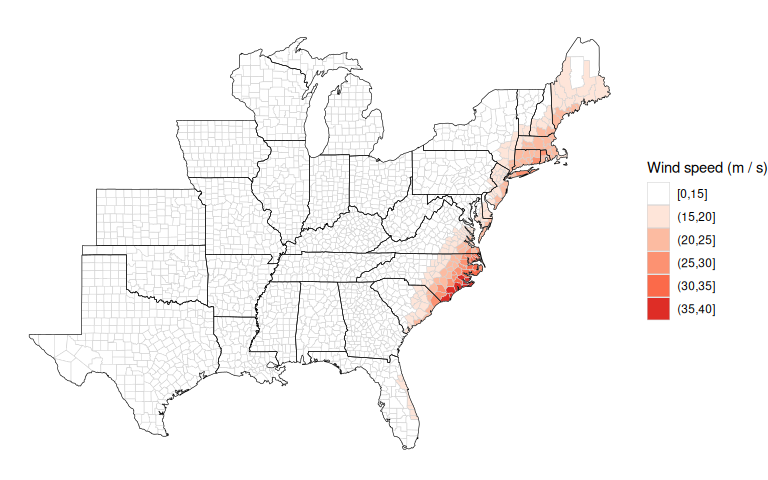
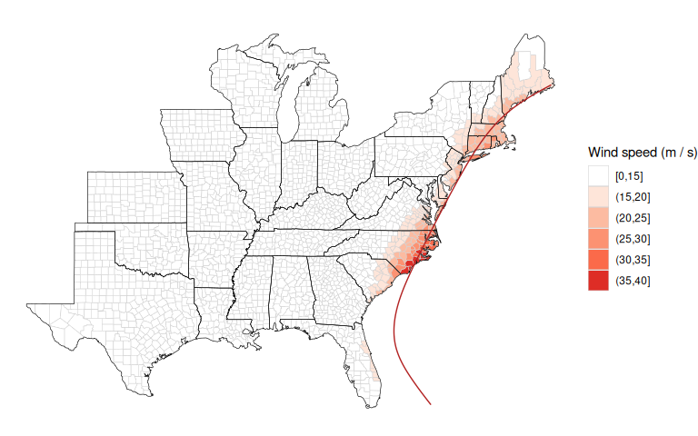
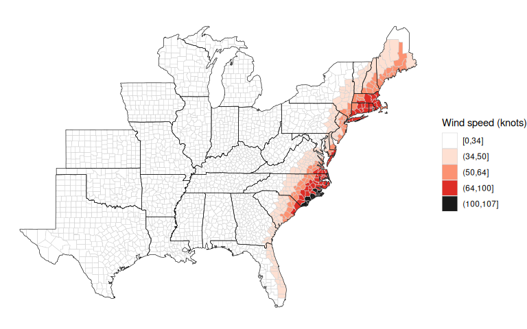

Overview
The stormwindmodel package was created to allow users to model wind speeds at grid points in the United States based on “best tracks” hurricane tracking data, using a model for wind speed developed by Willoughby and coauthors (2006). The package includes functions for interpolating hurricane tracks and for modeling and mapping wind speeds during the storm. It includes population mean center locations for all U.S. counties, which can be used to map winds by county; however, other grid point locations can also be input for modeling. Full details on how this model is fit are provided in the “Details” vignette of the stormwindmodel package.
This package is currently in development on GitHub. You can install it using the install_github function from the devtools package using:
devtools::install_github("geanders/stormwindmodel", build_vignettes = TRUE)Package example data
For examples, the package includes data on the tracks of Hurricane Floyd in 1999 and Hurricane Katrina in 2005. You can load these example best tracks data sets using:
library(stormwindmodel)
data("floyd_tracks")
head(floyd_tracks)
#> # A tibble: 6 × 4
#> date latitude longitude wind
#> <chr> <dbl> <dbl> <dbl>
#> 1 199909071800 14.6 -45.6 25
#> 2 199909080000 15 -46.9 30
#> 3 199909080600 15.3 -48.2 35
#> 4 199909081200 15.8 -49.6 40
#> 5 199909081800 16.3 -51.1 45
#> 6 199909090000 16.7 -52.6 45
data("katrina_tracks")
head(katrina_tracks)
#> # A tibble: 6 × 4
#> date latitude longitude wind
#> <chr> <dbl> <dbl> <dbl>
#> 1 200508231800 23.1 -75.1 30
#> 2 200508240000 23.4 -75.7 30
#> 3 200508240600 23.8 -76.2 30
#> 4 200508241200 24.5 -76.5 35
#> 5 200508241800 25.4 -76.9 40
#> 6 200508250000 26 -77.7 45This example data includes the following columns:
-
date: Date and time of the observation (in UTC) -
latitude,longitude: Location of the storm at that time -
wind: Maximum wind speed at that time (knots)
You can input other storm tracks into the wind modeling functions in the stormwindmodel package, but you must have your storm tracks in the same format as these example dataframes and with these columns names to input the tracks to the functions in stormwindmodel. If necessary, use rename from dplyr to rename columns and convert_wind_speed from weathermetrics to convert windspeed into knots.
The stormwindmodel package also includes a dataset with the location of the population mean center of each U.S. county (county_points). This dataset can be used as the grid point inputs if you want to model storm-related winds for counties. These counties are listed by Federal Information Processing Standard (FIPS) number, which uniquely identifies each U.S. county. This dataset comes from the US Census file of county population mean center locations, as of the 2010 Census.
data(county_points)
head(county_points)
#> gridid glat glon glandsea
#> 1 01001 32.50039 -86.49416 TRUE
#> 2 01003 30.54892 -87.76238 TRUE
#> 3 01005 31.84404 -85.31004 TRUE
#> 4 01007 33.03092 -87.12766 TRUE
#> 5 01009 33.95524 -86.59149 TRUE
#> 6 01011 32.11633 -85.70119 TRUEYou can use a different dataset of grid points to model winds at other U.S. locations, including across evenly spaced grid points. However, you will need to include these grid points in a dataframe with a similar format to this example dataframe, with columns for each grid point id (gridid— these IDs can be random but should be unique across grid points), and glat and glon for latitude and longitude of each grid point.
Basic example
The main function of this package is get_grid_winds. It inputs storm tracks for a tropical cyclone (hurr_track) and a dataframe with grid point locations (grid_df). It models winds during the tropical storm at each grid point and outputs summaries of wind during the storm at each grid point from the storm. The wind measurements generated for each grid point are:
-
vmax_gust: Maximum 10-m 1-minute gust wind experienced at the grid point during the storm -
vmax_sust: Maximum 10-m 1-minute sustained wind experienced at the grid point during the storm -
gust_dur: Duration gust wind was at or above a specified speed (default is 20 m/s), in minutes -
sust_dur: Duration sustained wind was at or above a specified speed (default is 20 m/s), in minutes
To get modeled winds for Hurricane Floyd at U.S. county centers, you can run:
floyd_winds <- get_grid_winds(hurr_track = floyd_tracks,
grid_df = county_points)
floyd_winds %>%
dplyr::select(gridid, vmax_gust, vmax_sust, gust_dur, sust_dur) %>%
slice(1:6)
#> # A tibble: 6 × 5
#> gridid vmax_gust vmax_sust gust_dur sust_dur
#> <chr> <dbl> <dbl> <dbl> <dbl>
#> 1 01001 2.98 2.00 0 0
#> 2 01003 1.97 1.32 0 0
#> 3 01005 4.82 3.23 0 0
#> 4 01007 2.32 1.56 0 0
#> 5 01009 2.61 1.75 0 0
#> 6 01011 4.09 2.74 0 0If you use the coutny_points data that comes with the package for the grid_df argument, you will model winds for county centers. In this case, the gridid is a county FIPS, and the stormwindmodel package has a function called map_wind for mapping the estimated winds for each county. By default, it maps the maximum sustained wind in each county during the storm in meters per second.
map_wind(floyd_winds)
Further functionality
Options for modeling winds
You can input the track for any Atlantic Basin tropical storm into get_grid_winds, as long as you convert it to meet the following format requirements:
- Is a dataframe of class
tbl_df(you can use thetbl_dffunction fromdplyrto do this) - Has the following columns:
-
date: A character vector with date and time (in UTC), expressed as YYYYMMDDHHMM. -
latitude: A numeric vector with latitude in decimal degrees. -
longitude: A numeric vector with longitude in decimal degrees. -
wind: A numeric vector with maximum storm wind speed in knots
-
For the grid point locations at which to model, you can input a dataframe with grid points anywhere in the eastern half of the United States. For example, you may want to map wind speeds for Hurricane Katrina by census tract in Orleans Parish, LA. The following code shows how a user could do that with the stormwindmodel package.
First, the tigris package can be used to pull US Census tract shapefiles for a county. You can use the following code to pull these census tract file shapefiles for Orleans Parish in Louisiana:
This shapefile gives the polygon for each census tract. You can use the st_centroid function from the sf package to determine the location of the center of each census tract:
library(sf)
new_orleans_tract_centers <- st_centroid(new_orleans)
#> Warning: st_centroid assumes attributes are constant over geometries
head(new_orleans_tract_centers)
#> Simple feature collection with 6 features and 13 fields
#> Geometry type: POINT
#> Dimension: XY
#> Bounding box: xmin: -90.01988 ymin: 29.89858 xmax: -89.78792 ymax: 30.10123
#> Geodetic CRS: NAD83
#> STATEFP COUNTYFP TRACTCE GEOID GEOIDFQ NAME
#> 47 22 071 001758 22071001758 1400000US22071001758 17.58
#> 243 22 071 000617 22071000617 1400000US22071000617 6.17
#> 331 22 071 001748 22071001748 1400000US22071001748 17.48
#> 333 22 071 001747 22071001747 1400000US22071001747 17.47
#> 334 22 071 001750 22071001750 1400000US22071001750 17.50
#> 601 22 071 000800 22071000800 1400000US22071000800 8
#> NAMELSAD MTFCC FUNCSTAT ALAND AWATER INTPTLAT
#> 47 Census Tract 17.58 G5020 S 169948955 95735784 +30.0986674
#> 243 Census Tract 6.17 G5020 S 1201874 277641 +29.9012380
#> 331 Census Tract 17.48 G5020 S 2067053 0 +30.0254915
#> 333 Census Tract 17.47 G5020 S 7119930 344001 +30.0414373
#> 334 Census Tract 17.50 G5020 S 1437944 166340 +30.0384832
#> 601 Census Tract 8 G5020 S 614812 0 +29.9596374
#> INTPTLON geometry
#> 47 -089.7948284 POINT (-89.78792 30.10123)
#> 243 -089.9940860 POINT (-89.99299 29.89858)
#> 331 -089.9554344 POINT (-89.95543 30.02549)
#> 333 -089.9549478 POINT (-89.95391 30.04018)
#> 334 -089.9176831 POINT (-89.91693 30.03769)
#> 601 -090.0198758 POINT (-90.01988 29.95964)Here is a map of the census tracts, with the center point of each shown with a red dot (note that an area over water is also included– this is included as one of the census tract shapefiles pulled by tigris for Orleans Parish):
library(ggplot2)
ggplot() +
geom_sf(data = new_orleans) +
geom_sf(data = new_orleans_tract_centers, color = "red", size = 0.6)
Since the new_orleans_tract_centers is now in the appropriate format to use with the stormwindmodel functions, you can input it directly into get_grid_winds to model the winds from Hurricane Katrina at each census tract center:
new_orleans_centers <- bind_cols(
new_orleans_tract_centers,
st_coordinates(new_orleans_tract_centers)
)
new_orleans_centers <- new_orleans_centers[c("TRACTCE", "X", "Y")]
new_orleans_centers <- st_drop_geometry(new_orleans_centers)
colnames(new_orleans_centers) <- c("gridid", "glon", "glat")
new_orleans_centers$glandsea <- mapply(
check_over_land,
new_orleans_centers$glat,
new_orleans_centers$glon
)
new_orleans_tracts_katrina <- get_grid_winds(hurr_track = katrina_tracks,
grid_df = new_orleans_centers)
head(new_orleans_tracts_katrina)
#> # A tibble: 6 × 6
#> gridid date_time_max_wind vmax_sust vmax_gust sust_dur gust_dur
#> <chr> <dttm> <dbl> <dbl> <dbl> <dbl>
#> 1 001758 2005-08-29 13:30:00 56.2 83.8 900 1335
#> 2 000617 2005-08-29 13:30:00 41.0 61.0 705 1125
#> 3 001748 2005-08-29 13:30:00 40.2 59.9 690 1110
#> 4 001747 2005-08-29 13:30:00 39.9 59.5 690 1110
#> 5 001750 2005-08-29 13:30:00 41.3 61.5 690 1110
#> 6 000800 2005-08-29 13:30:00 39.2 58.5 705 1110To plot these modeled winds, you can merge this modeled data back into the “sf” version of the census tract shapefile data, joining by census tract identification, and then add to the map. You can show wind speed in this map with color.
library(viridis)
ggplot() +
geom_sf(data = new_orleans, aes(fill = vmax_sust)) +
geom_sf(data = new_orleans_tract_centers, color = "red", size = 0.6) +
scale_fill_viridis(name = "Maximum\nsustained\nwinds (m/s)")
There are also functions in this package that you can use to create a time series of all modeled winds at a specific grid point throughout the storm. For example, here is the code to calculate modeled wind at the population mean center of Dare County, NC (FIPS: 37055) throughout Hurricane Floyd:
dare_county <- county_points %>% # Get grid point information for Dare County
filter(gridid == "37055")
with_wind_radii <- floyd_tracks %>%
create_full_track() %>% # Interpolate tracks to every 15 minutes
add_wind_radii() # Calculate required inputs for Willoughby wind model
dare_winds <- calc_grid_wind(grid_point = dare_county, # Model winds at one grid point
with_wind_radii = with_wind_radii)
ggplot(dare_winds, aes(x = date, y = windspeed)) +
geom_line() +
xlab("Observation time (UTC)") +
ylab("Modeled surface wind (m / s)") 
For more details, see the “Details” vignette, which walks through all steps of the modeling process.
Options for mapping county-level winds
There are a number of options when mapping wind speeds using map_wind.
First, you can use the add_storm_track function to add the storm track to the map. This function inputs one dataframe with tracking data (the floyd_tracks example data that comes with the package in this case) as well as the plot object created using map_wind, which is input using the plot_object argument. In this example code, we’ve first created the base map of winds by county using map_wind and then input that, along with Floyd’s track data, into add_storm_track to create a map with both winds and the storm tracks:
floyd_map <- map_wind(floyd_winds)
add_storm_track(floyd_tracks, plot_object = floyd_map)
You can also choose whether to map sustained or gust winds (value, which can take “vmax_gust” or “vmax_sust”), as well as the unit to use for wind speed (wind_metric, which can take values of “mps” [the default] or “knots”).
map_wind(floyd_winds, value = "vmax_gust", wind_metric = "knots")
Finally, you can map a binary classification of counties with winds at or above a certain break point. For example, to map counties with sustained wind at or above 34 knots during the storm, you can run:
map_wind(floyd_winds, value = "vmax_sust", wind_metric = "knots",
break_point = 34)
Tracks data
You can get an R version of best tracks data for Atlantic basin storms from 1988 to 2015 through the hurricaneexposuredata package (also in development on GitHub):
devtools::install_github("geanders/hurricaneexposuredata")Here are all the storms currently included in that dataset:
library(hurricaneexposuredata)
data("hurr_tracks")
hurr_tracks %>%
tidyr::separate(storm_id, c("storm", "year")) %>%
dplyr::select(storm, year) %>%
dplyr::distinct() %>%
dplyr::group_by(year) %>%
dplyr::summarize(storms = paste(storm, collapse = ", ")) %>%
knitr::kable()
#> Warning: Expected 2 pieces. Additional pieces discarded in 27 rows [3313, 3314, 3315,
#> 3316, 3317, 3318, 3319, 3320, 3321, 3322, 3323, 3324, 3325, 3326, 3327, 3328,
#> 3329, 3330, 3331, 3332, ...].| year | storms |
|---|---|
| 1988 | Alberto, Beryl, Chris, Florence, Gilbert, Keith, AL13, AL14, AL17 |
| 1989 | Allison, Chantal, Hugo, Jerry |
| 1990 | AL01, Bertha, Marco |
| 1991 | Ana, Bob, Fabian, AL12 |
| 1992 | AL02, Andrew, Danielle, Earl |
| 1993 | AL01, Arlene, Emily |
| 1994 | Alberto, AL02, Beryl, Gordon |
| 1995 | Allison, Dean, Erin, Gabrielle, Jerry, Opal |
| 1996 | Arthur, Bertha, Edouard, Fran, Josephine |
| 1997 | AL01, Ana, Danny |
| 1998 | Bonnie, Charley, Earl, Frances, Georges, Hermine, Mitch |
| 1999 | Bret, Dennis, AL07, Floyd, Harvey, Irene |
| 2000 | AL04, Beryl, AL09, Gordon, Helene, Leslie |
| 2001 | Allison, Barry, Gabrielle, Karen, Michelle |
| 2002 | Arthur, Bertha, Cristobal, Edouard, Fay, Gustav, Hanna, Isidore, Kyle, Lili |
| 2003 | Bill, Claudette, AL07, Erika, Grace, Henri, Isabel |
| 2004 | Alex, Bonnie, Charley, Frances, Gaston, Hermine, Ivan, Jeanne, Matthew |
| 2005 | Arlene, Cindy, Dennis, Emily, Katrina, Ophelia, Rita, Tammy, Wilma |
| 2006 | Alberto, Beryl, Chris, Ernesto |
| 2007 | Andrea, Barry, Erin, Gabrielle, Humberto, Ten, Noel |
| 2008 | Cristobal, Dolly, Edouard, Fay, Gustav, Hanna, Ike, Kyle, Paloma |
| 2009 | One, Claudette, Ida |
| 2010 | Alex, Two, Bonnie, Five, Earl, Hermine, Nicole, Paula |
| 2011 | Bret, Don, Emily, Irene, Lee |
| 2012 | Alberto, Beryl, Debby, Isaac, Sandy |
| 2013 | Andrea, Dorian, Karen |
| 2014 | Arthur |
| 2015 | Ana, Bill, Claudette |
| 2016 | Bonnie, Colin, Eight, Hermine, Julia, Matthew |
| 2017 | Cindy, Emily, Harvey, Irma, Jose, Nate, Philippe |
| 2018 | Alberto, Chris, Florence, Gordon, Michael |
| 2019 | Barry, Three, Dorian, Fernand, Imelda, Melissa, Nestor, Olga |
| 2020 | Arthur, Bertha, Cristobal, Fay, Hanna, Isaias, Kyle, Laura, Marco, Omar, Sally, Beta, Delta, Zeta, Eta |
| 2021 | Bill, Claudette, Danny, Elsa, Fred, Henri, Ida, Mindy, Nicholas, Odette, Wanda |
| Two | Twenty |